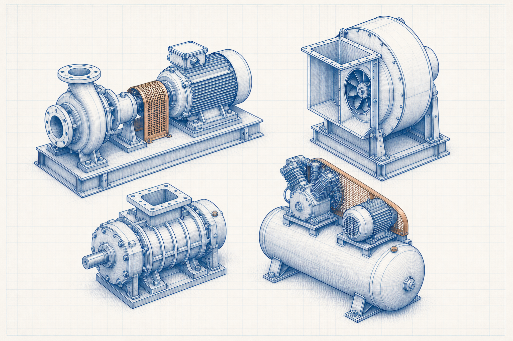

Engineering principle
Pipe Flow: Principles, Formulae and Industrial Applications
Pipe-flow analysis connects flow rate, velocity, pressure, elevation, friction and fittings in a defined piping system. It supports preliminary hydraulic design and troubleshooting when geometry and fluid conditions are known.

- Content type
- Engineering principle
- Level
- Engineering › Fluid Mechanics, Piping, Pumps, Fans and Ducts › Piping Systems › Pipe Flow › Pipe Flow Basics
- Audience
- Student · Design engineer · Project engineer · Plant engineer
- Last reviewed
- 30 August 2026
What Is Pipe Flow?
Pipe flow describes the movement of a liquid or gas through a closed conduit. The pressure change between points reflects elevation, velocity change, friction, local disturbances and any energy supplied or removed by equipment.
Why Is Pipe Flow Important in Engineering?
Piping velocity and pressure loss influence pump duty, control-valve authority, erosion, noise, energy use and operational stability. A useful calculation begins with a complete system boundary rather than a diameter alone.
Key Terms and Definitions
- Volumetric flow, Q
- Volume per unit time; SI unit m³/s.
- Mean velocity, v
- Flow rate divided by the internal flow area; SI unit m/s.
- Friction factor, f
- Dimensionless term used in a selected pipe-loss relation.
- Minor-loss coefficient, K
- Dimensionless local-loss representation for a fitting or component.
Fundamental Principle
Continuity relates flow rate to area and velocity. The practical energy equation then relates pressure, elevation, velocity and losses. Friction and local losses consume head; pumps or compressors may add energy to maintain the required flow.
Formulae, Symbols and Units
Continuity
Q = A v
Use internal flow area A in m² and mean velocity v in m/s to obtain Q in m³/s.
Darcy–Weisbach loss
hL = f (L/D) v²/(2g)
Use a Darcy friction factor f, length L, inside diameter D and velocity v on a consistent basis.
Local loss
hL = K v²/(2g)
Use the K value and reference velocity defined for the actual fitting or component.
Unit consistency
Use actual fluid density and viscosity at the operating condition. Keep a consistent length unit in L and D, and distinguish Darcy friction factor from other friction-factor conventions.
Assumptions and Validity Range
- The selected pipe geometry, roughness and fittings are representative of the system.
- Flow rate and properties represent the same operating case.
- The chosen relation is valid for the regime, fluid phase and component data being used.
Factors Affecting Pipe Flow
Pipe size and velocity
For a given flow, smaller internal area raises velocity and can increase losses.
Surface condition
Roughness, corrosion, deposits and lining condition can change the friction behaviour.
Fittings and equipment
Valves, bends, strainers, reducers and control devices can create material local losses.
Types, Classifications or Operating Cases
- Single-phase liquid piping.
- Gas piping where density variation must be addressed.
- Network or branch systems requiring a full pressure-balance method.
Step-by-Step Engineering Method
- Define the start and end points, process condition and required flow case.
- List pipe inside diameters, lengths, elevations, fittings and equipment.
- Calculate area, velocity and Reynolds number using operating properties.
- Select a valid friction and local-loss method.
- Add static elevation and machine head terms, then check the pressure balance.
Illustrative Engineering Example
Hypothetical example — not a design calculation
A process line connects a pump discharge to an elevated vessel through straight pipe and fittings. The task is to identify the inputs required for a preliminary total-head estimate.
- Record actual flow, density, viscosity, inside diameter, length and elevation difference.
- Calculate velocity and determine a suitable friction-factor method.
- Add straight-pipe loss, fitting losses and elevation change before comparing with available pump head.
The example does not replace a complete line list, pump curve, control-valve analysis or transient assessment.
Industrial Applications
- Pump-system head calculations.
- Pipe-size and velocity screening.
- Ventilation and utility-system pressure-balance concepts.
- Pressure-drop troubleshooting in fouled or modified lines.
- Preliminary review of piping and equipment interfaces.
Common Mistakes and Limitations
- Using nominal pipe size as the hydraulic diameter.
- Ignoring fittings, valves or equipment losses.
- Using a friction factor from an incompatible convention.
- Applying incompressible liquid methods unchanged to compressible gas flow.
Frequently Asked Questions
Why is inside diameter important?
It sets flow area, velocity and the L/D ratio in common loss equations.
What are minor losses?
They are local losses caused by fittings, entries, exits, valves and other disturbances; they may not be minor in a short or complex system.
Does low velocity always mean low system cost?
No. Lower velocity can reduce losses but may require a larger and more costly pipe; the system must be evaluated as a whole.
Technical check list
Before relying on this guide
Confirm that the calculation or selection is based on the actual service rather than a nominal description. Identify the current drawing and data-sheet revisions, the operating period represented by measurements, the unit and reference-condition basis, and the responsible person for each critical input. This prevents a valid principle from being applied to an incompatible boundary or outdated condition.
Questions for a competent review
- Does the selected method address the geometry, material, fluid, equipment arrangement and operating range in question?
- Have minimum, maximum, start-up, shutdown, upset, maintenance and future cases been screened where they could govern?
- Are the result, tolerance and rounding appropriate for the quality and uncertainty of the available input data?
- Are plant constraints such as access, isolation, inspection, utilities, controls, safety and environmental duty included in the decision?
- Is there a documented field-verification step before a design, procurement or operating change is approved?
If one of these questions cannot be answered, retain the limitation in the technical record and obtain the necessary evidence or specialist review. The value of an engineering guide is not merely a result; it is a transparent basis for a safe, traceable and practical decision.
Expanded technical guide
Engineering Context and Practical Use
Pipe-flow analysis connects flow rate, velocity, pressure, elevation, friction and fittings in a defined piping system. It supports preliminary hydraulic design and troubleshooting when geometry and fluid conditions are known. Engineering reference articles should be used with a stated method, representative inputs, current drawings and qualified review for the actual service condition.
Define the physical and operating boundary before selecting equipment, interpreting performance or changing a set point. Consider normal operation, start-up, shutdown, minimum and maximum duty, maintenance condition, upset cases, seasonal effects and credible future modifications. A non-normal case can govern capacity, reliability, integrity, quality, environmental duty or safety.

Data and assessment basis
Define the boundary
inputs → equipment or system → outcome
Identify interfaces, reference points and the actual decision the assessment supports.
Use compatible data
result = valid method + representative inputs
Record units, service condition, source revision, material or fluid basis and uncertainty.
Check the limit
normal case ≠ governing case
Review the condition that controls capacity, reliability, safety, serviceability or performance.
Verify the result
assessment ↔ field evidence
Compare the conclusion with inspection, measurements, supplier limits and controlled documents.
Practical engineering method
- Define the duty, system boundary, required decision and applicable project or code basis.
- Collect current drawings, data sheets, service properties, operating trends and maintenance history.
- Set normal, minimum, maximum, start-up, upset and future cases that are relevant to Pipe Flow: Principles, Formulae and Industrial Applications.
- Select a method appropriate to the actual configuration and valid range.
- Review interfaces with utilities, controls, access, inspection, isolation and protection systems.
- Test important sensitivities where uncertainty could change the decision.
- Record inputs, sources, limitations, reviewer actions and field-verification requirements.
Operation, maintenance and reliability
Operating condition
Trend the parameters that reveal loss of duty, integrity, quality or environmental performance.
Maintenance access
Provide safe isolation, inspection, cleaning, lifting, spares and reinstatement for the actual arrangement.
Controls and safeguards
Check alarms, trips, interlocks and manual actions over the complete operating envelope.
Change management
Reassess after changes to material, load, fuel, layout, component, software, control or operating procedure.
Field verification
Use calibrated measurements at defined locations and comparable operating conditions.
Competent review
Escalate specialist, code, safety, environmental or supplier decisions beyond this educational scope.
Common decision errors
- Using an obsolete drawing, data sheet, property value or equipment limit.
- Mixing design, actual and reference conditions without a controlled conversion.
- Checking one normal case while missing the governing condition.
- Ignoring maintenance, access, isolation, controls or downstream consequences.
- Claiming precision greater than the evidence supports.
- Treating educational guidance as final design, safety, procurement or compliance approval.
- Failing to update the basis after a controlled change.
Lifecycle Evidence, Field Verification and Change Control
Pipe Flow: Principles, Formulae and Industrial Applications should remain connected to current evidence throughout its service life. Material variation, wear, fouling, corrosion, temperature, loading, contamination, control changes, maintenance practice and upstream process variation can change the basis on which equipment or a calculation was originally selected.
Maintain a usable evidence set
Record whether each important input is measured, calculated, supplier-rated, estimated or assumed. Retain the source, revision, date, units, reference condition, measurement location and expected uncertainty. This prevents a result from being compared with an obsolete data sheet, a different operating case or a measurement taken at another system boundary.
Use equivalent operating conditions when comparing field trends. Document production load, material or fuel condition, relevant pressure and temperature, equipment configuration, controls, instruments and maintenance state. A plausible trend can be misleading if these conditions are not comparable.
Check the actual governing condition
Review normal operation as well as start-up, shutdown, low load, maximum duty, dirty condition, maintenance bypass, upset, seasonal effect and credible future modification. The governing case may control capacity, reliability, integrity, emissions, quality, energy, electrical duty, serviceability or safety.
If reasonable uncertainty changes a decision, improve the evidence through inspection, representative testing, calibrated measurement, supplier confirmation, a controlled trial or specialist analysis. This is more valuable than reporting extra decimal places from an uncertain basis.
Turn maintenance into engineering information
Inspection findings can reveal local wear, leakage, buildup, cracking, corrosion, misalignment, overheating, abnormal vibration, control instability or loss of access that simple selection methods do not show. Record the location, condition, observed mechanism, action and follow-up result so future decisions use the actual service history.
Define the early-warning parameters, review trigger, responsible role and escalation path. Repeated alarms, manual intervention, rising energy, pressure loss, reduced capacity, dust release, unstable flow or recurring component damage should be investigated as system evidence, not reset as isolated symptoms.
Implement controlled change
Before changing material, equipment, layout, settings, controls, operating procedure or maintenance practice, check affected drawings, equipment limits, protective functions, isolation requirements, permits, training, spares and downstream interfaces. A local improvement can move a problem to another part of the system.
After implementation, compare measured performance with stated acceptance criteria at comparable conditions, update the controlled record and document any remaining limitation. This page is an educational reference; final project, code, safety, environmental, electrical and procurement decisions require qualified review with current site information.
Core engineering extension
Technical Basis, Interpretation and Engineering Limits
Pipe Flow: Principles, Formulae and Industrial Applications is a core engineering subject because it connects directly to how a system is defined, selected, analysed, operated or maintained. A correct result depends on a clear boundary, compatible data, an appropriate method and an understanding of what the method does not include.
Define conditions before applying a relationship
State the material or fluid, geometry, equipment configuration, pressure, temperature, load, flow, reference condition and operating point that each value represents. Distinguish design data from measured data, nominal ratings from actual performance, and a controlled specification from a preliminary estimate. A technically correct relationship can give an unsuitable answer when its inputs represent another condition.
Build the calculation or assessment from a transparent sequence: define the decision; identify the control volume or physical boundary; collect reliable inputs; state assumptions; apply a method within its valid range; compare the result with independent evidence; and record the limitation or next verification action. This makes the work reviewable and helps operators and maintainers understand what the result means.
Use dimensionally consistent data
Keep units, reference state and property basis consistent. Check whether a pressure is absolute or gauge, a temperature is suitable for the selected relationship, a density or property belongs to the actual material condition, a flow is mass or volume based, and a value is instantaneous, rated, average or maximum. Unit conversion is not merely arithmetic when reference conditions differ.
Where a method produces a precise numerical value, compare its likely uncertainty with the quality of the input data. Report a sensible number of significant figures and make clear which input has the greatest influence. If uncertainty could change a decision, obtain better field data or a specialist calculation rather than adding unsupported precision.
Connect theory with equipment behaviour
Real systems contain fittings, interfaces, fouling, wear, leaks, heat loss, bypasses, controls, vibration, access constraints and non-uniform conditions. Use field observation and maintenance findings to determine whether the simplified model still represents the installation. A difference between predicted and observed behaviour is evidence to investigate, not automatically an error in either result.
Review start-up, shutdown, minimum load, maximum duty, dirty condition, maintenance condition, upset and future modification. These cases can govern a different limit from normal operation and may require another method, another safety margin or a changed operating procedure.
Illustrative review approach
A practical review starts by comparing the intended duty with current measured behaviour, then checks assumptions, units, data source, boundary and interfaces. If the difference remains meaningful, inspect the equipment and process conditions, test the sensitive variables and identify whether the correct action is data collection, maintenance, operating adjustment, redesign or qualified specialist review.
Retain the calculation, source information, test record, limitations, reviewer comments and change history. This preserves the engineering basis through design, commissioning, operation and maintenance and prevents an educational guide from becoming an uncontrolled project instruction.
Expanded FAQs
What should be established first?
Establish the actual system boundary, relevant service condition, required decision and governing case for Pipe Flow: Principles, Formulae and Industrial Applications.
Why is normal operation not enough?
Start-up, low-load, peak, maintenance, upset and future cases can control different limits.
Which records should be retained?
Keep inputs, source and drawing revisions, assumptions, results, limitations, review record and verification evidence.
When should the assessment be repeated?
Repeat it after a material, equipment, route, load, control or operating-procedure change.
How should the result be checked?
Use inspection and calibrated measurements at the same boundary and condition basis.
Can this page approve final project work?
No. Final design, code, safety, procurement and compliance decisions require current project information and qualified review.
Why involve operations and maintenance?
They identify practical limits involving access, isolation, cleaning, reliability and actual behaviour.
What makes input data representative?
It matches the actual material, configuration, service, source revision, measurement location and operating condition.
What is an important limitation?
A simplified guide cannot include every site-specific geometry, degradation mechanism, safeguard or code requirement.
What should be reviewed after commissioning?
Compare performance, condition, alarms, losses, quality and maintenance findings with the documented basis.
How should unexpected behaviour be handled?
Verify the data and boundary, investigate the difference and follow the approved technical-review or change-management process.
Applied engineering review
Pipe-flow calculations: decision basis and field verification
Define the fluid properties, pipe internal diameter and roughness, route elevation, fittings, valves, equipment losses and duty cases before calculating pressure loss or pump head. The installed system may differ significantly from nominal-pipe assumptions.
Evidence before action
Verify flow, pressure at defined locations, temperature, density or viscosity, valve position, pump speed, filter condition and current line configuration. Compare normal, minimum, maximum, start-up and future cases with the same boundary conditions. The technical record should show the source revision, unit basis, measurement location, operating mode and known limitations so that another competent person can reproduce the conclusion.
Review sequence
- State the decision that the assessment must support and establish the system boundary.
- Gather current drawings, data sheets, operating records, inspection evidence and applicable project or code requirements.
- Define normal, limiting, start-up, shutdown, upset and future cases that are relevant to the service.
- Use a method whose assumptions, property basis and validity range match the actual arrangement.
- Check the outcome against independent measurements, supplier information or physical evidence.
- Record sensitivity, uncertainty, actions, owner and any required follow-up measurement or inspection.
Limitations and safeguards
Important review points are cavitation, surge, erosion, solids deposition, air pockets, minimum velocity, support movement, isolation requirements and pressure-rating limits. This educational page supports preliminary understanding and does not replace a controlled design calculation, manufacturer instruction, safety study, statutory inspection or review by a qualified engineer.
Decision record
Before implementing a change, retain the governing case, key assumptions, source data, result, reviewer comments, verification plan and change-control reference. Reassess the conclusion when the material, geometry, operating condition, control arrangement, equipment condition or governing requirement changes.
References
- Munson, B. R., Okiishi, T. H., Huebsch, W. W. and Rothmayer, A. P. Fundamentals of Fluid Mechanics. 9th ed. Wiley. 2021.
- Fox, R. W., McDonald, A. T., Pritchard, P. J. and Leylegian, J. C. Fox and McDonald’s Introduction to Fluid Mechanics. 10th ed. Wiley. 2020.
This page is an original educational summary. It does not reproduce protected book text, tables, figures or standards material.